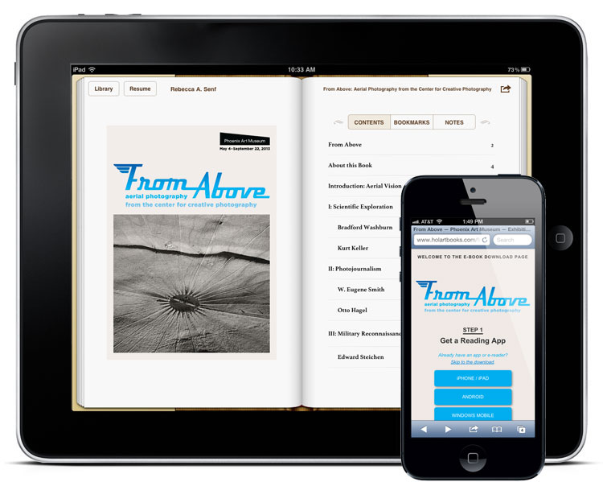

Using the substantial amount of material already gathered for the gallery guide, wall labels and checklist, we created an exhibition e-book for From Above and made it available for free download in the gallery and online. It’s in the widely used .epub format, and includes all 80 images, responses to the work from specialists in other fields, a short essay by the curator, and biographies for a number of the twenty-one included artists.